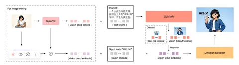

Продолжаем разбирать интересные авторегрессионные модели text-to-image. Недавно рассказывали о BitDance, а сегодня на очереди GLM-Image. В блогпосте технических деталей почти нет, зато есть код в Diffusers, так что архитектуру можно восстановить довольно подробно.
Идея в следующем. Большая LLM каузально генерирует последовательность семантических визуальных токенов, а затем отдельный DiT восстанавливает по ним изображение высокого качества. Генерация и редактирование картинок напрямую LLM — мысль не новая (вспомним хотя бы Janus), но GLM-Image отличается несколькими интересными design choice и заметно превосходит предыдущие авторегрессионные модели по качеству.
Архитектура состоит из двух частей: авторегрессионного GLM-4-9B и диффузионного декодера на 7B параметров.
LLM генерирует изображение поэтапно. Сначала строится сетка 8х8 токенов — грубая композиция сцены. Она остаётся в KV-cache, и модель продолжает генерацию уже для 16х16, а затем и 32х32 токенов. Получается обычная авторегрессионная генерация в raster-порядке, но с постепенным увеличением разрешения.
Дальше семантические токены поступают в single-stream DiT, где поканально конкатятся с латентом шума. Примерно за 50 шагов диффузии модель восстанавливает финальное изображение. Любопытно, что текстовые эмбеддинги в DiT вообще не используются, поскольку считается, что вся семантика уже содержится в токенах, сгенерированных LLM. Исключение — текст в кавычках. Его дополнительно кодируют через ByT5 и подают как отдельное условие, чтобы модель лучше рисовала надписи.
Эдитинг устроен похоже. Исходное изображение кодируют в те же семантические токены и вместе с текстом отправляют в LLM. Параллельно картинка проходит через VAE encoder, после чего его признаки объединяются с семантическими фичами и поступают в DiT. В итоге LLM отвечает только за семантику, а восстановление структуры и мелких деталей остаётся за диффузионным декодером.
Самая интересная часть работы — токенизатор. Авторы выбирают между обычным VQ-VAE и semantic-VQ. Первый лучше оптимизирует реконструкцию, второй специально обучается так, чтобы токены содержали семантическую информацию. При одинаковом размере кодбука авторегрессионной модели заметно проще предсказывать именно semantic-VQ-токены, поэтому выбор падает на них. Кроме того, с заделом на будущее такой токенизатор открывает путь к единому представлению для мультимодальных моделей.
Про обучение известно немного. Авторы почти полностью ссылаются на X-Omni. Берут SigLIP2-g, добавляют vector-квантизацию, выравнивают представления с помощью небольшой Qwen2.5-1.5B и получают кодбук всего на 16 тысяч токенов с адаптером в пространство LLM.
Сам авторегрессионный бэкбон — GLM-4-9B-0414. Текстовые эмбеддинги замораживают, добавляют эмбеддинги визуальных токенов и заменяют LM-head новой головой, предсказывающей элементы кодбука. По сути, LLM просто учится продолжать последовательность, где после текста идут токены изображения. Судя по X-Omni, DiT отдельно обучают реконструкции по семантическим токенам, а затем обе модели шлифуют с помощью GRPO.
На бенчмарках GLM-Image находится в нижнем сегменте открытых SOTA-диффузионных моделей, но среди авторегрессионных подходов это большой шаг вперёд. Главная идея работы — использовать LLM как генератор семантических токенов, а восстановление деталей оставить диффузионному декодеру. Такая схема позволяет использовать знания LLM из текстового претрейна, естественно работать с interleaved-контекстом и получать качество, уже близкое к современным диффузионным моделям.
Разбор подготовил
CV Time
